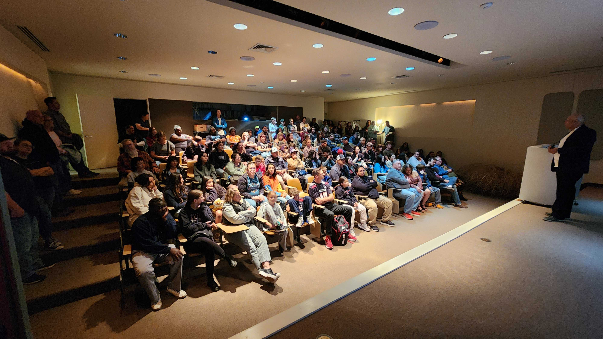
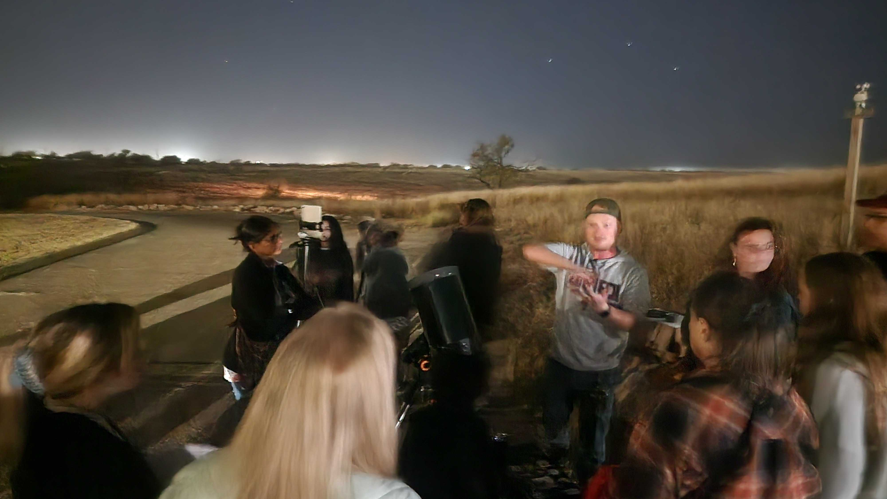
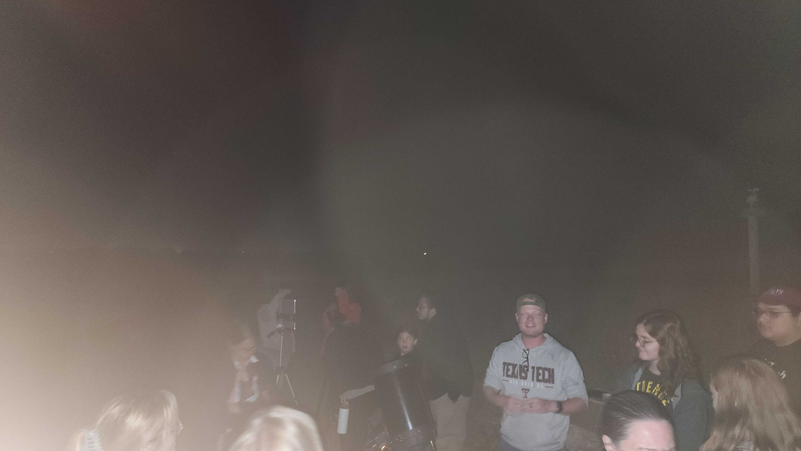

Outreach · November 2025
AstroNight 2025
I volunteered at AstroNight, an event dedicated to bringing the cosmos closer to the community. I spent the evening guiding public viewing sessions and leading educational talks with my personal telescope setup.



Ongoing
Teaching & public astronomy
Astronights volunteer with the TTU Department of Physics & Astronomy since 2024, and former STEM educator at Science Spectrum in Lubbock, where I developed curriculum and led eclipse-outreach events with more than 800 attendees.
Classroom
Lab & learning assistant
Supported laboratory instruction for more than 200 students in the Solar System and Stellar Astronomy labs at Texas Tech, including observing instruction and equipment troubleshooting.